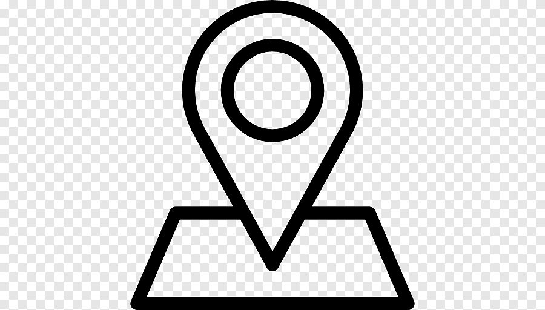

Julien Vandewoestyne
Etudiant Chez MDS Lille
julienvdw@gmail.com
 101 rue Jacquemars Gielee
06 95 74 10 83
Qualités
Diplômes et formations
Lycée Sainte-Claire Lille
My digital School Lille
2020-2021
Experiences Professionnlles
Vendeur Chez Levi's
Levi's, Lille
Dans l'attente de mon concours en gendarmerie, je ne souhaitais pas rester inactif pendant 6 mois. J'ai donc été engagé chez Levi's.
Eleve Gendarme Sous-officier
Ecole de Gendarmerie, Chateaulin
Après avoir obtenu mon concours, je suis parti en école de Gendarmerie. Suite à un entrainement physique, je me suis gravement blessé et j'ai du renoncer à la gendarmerie.
Régulateur au SAMU
SAMU 59, Lille
Après 8 mois de Gendarmerie et une blessure, j'ai décidé de ne pas me laisser aller et j'ai été contacté pour traviller au SAMU 59. Depuis Janvier, j'excerce ce métier, même aujourd'hui, en complément de mes cours
Competences
HTML, CSS, Javascript
Maitrise de la Suite Adobe
Montage vidéo et photo
Connaissances du milieu professionnel
Langues
Anglais
Espagnol
RESEAUX SOCIAUX
 https://twitter.com/VDWJulien
https://twitter.com/VDWJulien
 https://fr-fr.facebook.com/julienvdw
https://fr-fr.facebook.com/julienvdw
 https://www.instagram.com/julien_vdw
https://www.instagram.com/julien_vdw
 https://www.linkedin.com/in/julien
https://www.linkedin.com/in/julien